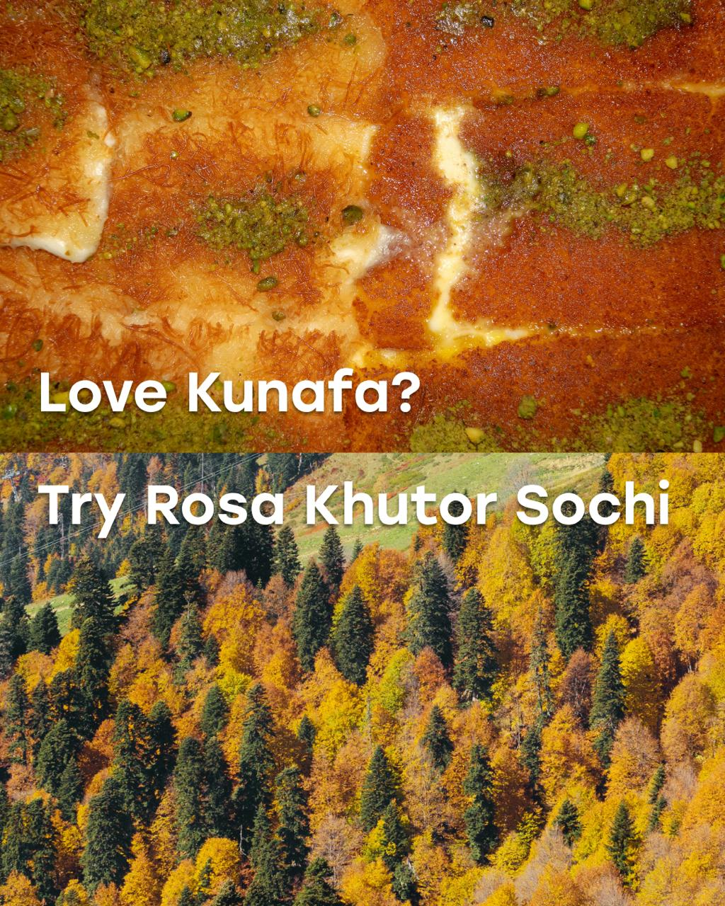

сказ как на семиозёрье меня сводила @ananas.margo
… И вернула нытика домой 😆
Настолько красиво, что инстаграм помечает этот пост «данные ИИ», как его убрать? Это не ИИ😆
Camping clothing in the 1970s was full of personality. Short shorts, fitted shirts, suede jackets, tube socks, leather boots, and external-frame packs created a look that felt distinct without relying on modern technical apparel.
#Joyner #Camping #OutdoorStyle #1970s #ExploreTheUnknown
Как эти весули, их сичем дома, обними руками дерева, и тушенка выйдет сама как по маслу. Опираясь из пиноя на дерево и очищая организм перед сложным восхождением. Королевский трон тебе подойдет любой упавшие дерева. Горда Релс, способ очень стильный, но очень опасный. Посад пять. Его я подглядел у грибцов, в котором скучно в одиночку.
Описание
Пиши ОТПУСК и получишь гайд с которым ты без заморочек и Долгих подготовок быстро уедешь в крутое путешествие за минимальный бюджет и как можно быстрее пробуешь все способы вылета еды со свистом из ролика
Before lightweight hiking pants became the standard, short shorts were a defining part of outdoor clothing throughout the 1970s.
Backpackers, climbers, and hikers wore them on trails around the world alongside tube socks, leather boots, and external-frame packs.
While outdoor apparel has changed dramatically over the past 50 years, these photographs capture a time when simplicity defined the uniform of exploration.
#Joyner #Backpacking #Outdoors #Archive #VintageStyle
Такую погод только горяченький себем и греться. Сколько можно уже пошли спать? Сейчас, подождите.
Описание
Нам 100 лет на двоих!
Саша — самый тяжёлый легкоатлет в городе: его вес упорно стремится к 90 кг и с 90‑х годов упорно стремится похудеть.
Вика вдохновляет Сашу. Монтирует крутые видосы — настолько мотивирующие, что после них ты сразу сделаешь то, что хотел сделать в понедельник.
Подпишись — здесь о движении и мотивации без занудства, заодно узнаешь, получится ли у Саши наконец похудеть до
CLI-00110

Описание
Peaks shaped like dessert tops, snow trails soft as marshmallow. Rosa Khutor is the taste of a Russia you didn't expect 🇷🇺
Which one would you visit first? 🖊
قمم تشبه أطراف الحلا، ودروب ثلجية طرية مثل المارشميلو. روزا خوتور طعم روسيا اللي ما كان بالحسبان 🇷🇺
أي وحدة تستاهل تكون أول وجهة؟ 🖊
Слать и снимать вот так вот. Это же выглядит не очень красиво и скучно. Лучше вот так сделать. Просто маленький штатив прикрепляем телефоном. Режимчик выбираем киноэффектом. Вот такие настройки диафрагмы 4 .5. Дальше поворачиваем камеру. И камеру 2 .1 слушаю и берем. Качество я поставил 4 .3. Вот куда они туда просто ставят телефон. И пальчиком сюда на дуанчик нажимить. Далее снимать нажимать. Берете этот стул, тащите с собой. И берете свои часы, чтобы видеть, чтобы вы в кадре были. Уходим из кадра. Далее я просто вкладываю в кадр. Ставлю стул. Сажусь сам. Нашками вот так вот. Попой на стул. И еще могу фотоаппарату взять и делать, как вот и шелку. И далее еще улыбаю с камеру. Вот так вот. Зачем мы снимали режимы киноэффекта? Открываем от видео, нажимаем здесь редактировать. И смотрите где допустим. Мы вот здесь вот садимся на стульчик. Мы именно ставим фокус сюда пока еще не спешим. А когда я уже попы присажусь вот на стул. Вот здесь вот вот так вот матаем -атаем. Попой вот. Поп я на себя нажал. Поп чтобы фокус нам не был. И тогда будет круто красиво. Бам я показал вот так вот два пальчика сюда. И потом уже, когда я встаю снова сюда вот пальчики нажимаем все. Мы редактирули видео. И смотрим, что у нас получилось. Кайфовый вид, да? Поэтому сохраняется, друзья, подружка мы отправляйте сами пробуйте. И я вас приглашаю на бесплатную консеренцию 2 -сосмого Юля. Чтобы вы научились продвигать бок самунда. Окей, ссылть в царках. Погнали, до встречи в новых видео.
Что я беру с собой в поход, чтобы не умирить с голодом? Кей -ей -й -й -ю -ху -ху -ху -ху -ху -ху! Звя голуба -ка! Ниха -у -ху -ху! Звели, блин, а в сад...
Описание
Годный походный лайфхак, скажу я вам😅
Попробовать можно тут:
⛰️19-30 июня - Курс обучения парапланеризму на Кавказе (1 место)
⛰️4 июля - 13 июля - Алтай. Поход к подножию Белухи (4 места)
⛰️21-31 августа - Фанские горы. Таджикистан. Поход. (5 мест)
Подробнее о турах можно посмотреть в актуальных и по ссылке в шапке профиля😉
Этот способ от древних война вспосед твои ноги. Уменьшив объеме брюки, возьми полосу натуральный, конечно, шириной примерно 12 сантиметров. Начиная плотно обматывать от воды шки вверх, делая перегиб ткани с переденоголень. Когда идешь до конца, зафиксируй конец обмотки. Теперь кровь не будет застаиваться в ногах, что избавит от отеков и усталости в пешем походе на большие расстоянии. Дай марафон можно бежать без сильного утомления.
Описание
Это спасëт твои ноги в походе! #лайфхак #выживание #поход
Вспомним наш 2024 год, когда пошли в поход в апреле, первый выгул шатра и погода решила устроить нам квест, как не улететь вместе с ним 😂
Спасибо оператору @asmalovsk которая успевала держать шатер, ржать и снимать контент #поход #когдамывместениктонекруче #выходные #весело #веселье
Это бгрязь !riesи же Б studios. Иногда мне кажется, что люди рождены, чтобы просто смотреть на такие закаты. Какие облака? Как можно не любить такие облака, Боже! Это не лесно труба! Я лучше бы на работе сидел.
Описание
У каждого походника бывает «горная биполярка»!
.
.
.
#reels #горы #путешествие #life #travelling
Как экономит на газу в походе? Зачем переплачивать за резьбовой баллон? Если можно покупать санговые и просто переливать отсюда. Сюда, в самом деле, дело не только в экономии, а в том, что резьбовой баллоны мало где продаются. А вот эти можно достать вообще везде. Вот, если так вы и так выпадете в такой ситуации, что вы в походе у вас и вы можете купить такой баллончик, или взять у кого -то или там. Не знаю, найти на тропе, вот, а и вам нужно перелить такой. Есть такая специальная штучка. Она так и называется. Приходник для заправки резьбового балона с сангового. Деланок в Китай, как и странно. Так, что мы делаем? Сначала нам нужно охладить этот баллон, нижний, который мы будем переливать. Можно там окнуть его горную речь, и там пускай он полежит. А этот мы на бороке немножко нагреваем для того, чтобы создать разницу удовления. Фух, я волнуюсь. Берем переходничок. Накручиваем. Вау! Так, наверное, это делается вот так. Ё обушки ворубушки. Работает. Надо -то посильнее нажать. Я слышу звук, как газ переходит в тот баллон. Мне натовочка круто. Но с точки зрения пустите, как сразу выходит наружу у нас. Так что не отпускайся. Получилось. Теперь здесь куча газа. А где этот почти пустой? Проверяем. Вы как вы понимаете, все базовые горелки и системы типа джетбоэлла и производных там фэрмай полы так далее, накручивается именно на резьбовой баллон. Поэтому нам принципиально мить именно его. Сейчас мы посмотрим, как пошел газ. И здесь я гоню. Вот так и делаю. Подписывайтесь, рассказывай про пахуды, про снарягу и всякие лавхаки.
Описание
Переливаем газ из цангового баллона в резьбовой!
Цена переходничка - 100 рублей, экономия — безгранична :)
PS
ВНИМАНИЕ! Жизненно важно следить за весом нижнего баллона, иначе бабахнет. Почитайте про это , прежде чем повторять мой эксперимент
это команды 50 фумат, сейчас расскажем как сэконометь монет, то он оказал баллонов. баллон была двух типов, восьбовые и танго. Если вы используете накручивающие горелки, то вам нужно восьбовую баллонов. Но стоит они как колосомолета, поэтому покупаем переходник для заправки из баллонов. Это -то, пожалуйста, мне все рукорубые на AliExpress. Берем уже использованный баллон и достаем за две копейки танго и баллон. Хорошая, хорошо бы, знаю сколько весит, полный баллон, написать это на обратной стороне марки. Но, сколько мы уже на упаде, просто перевернул к танго на переходник, добравляем при сбывой баллон. Приличный встях ему, чтобы понять, сколько еще есть место. В хорошем приличке, звешивать его и целиться вес заранее подписан над ним баллонам. Через пятьдесят минут таких манипуляций, баллон заправлен и готов их сплотаться. Но важно понимать, что баллон тоже есть с ровгодностью, и через примерно пятьдесят перезаправлений, при сбаваллоны слируются и придется раскошелиться на новый баллон. Такие дела. А еще мы делаем журнал по ходу.
Тот пятью стрелает вещей для похода. Склотной столик с подноцом. По всей ничего не весь день занимает место в рюкзаке, но очень выручает. Вместе со столиком идет подноц, который можно к нему прикрепить или использовать отдельно. Столик подвеса мне прогибается. Склотной стул занимает место как обычно оседушка. Но сидеть приятнее на стуле чем на земле. Весить всего 300 грамм, раскладывается за 30 секунд. Классно вежда стоя на кипривалоб. Карманный душ размером почить за жгалку. Весить всего 100 грамм. И какого удовольствия помыться в походе. В комплекте шно, чтобы вешать надею рва. Сам душ в виде герма мешка. Очерная ткань питывает солнце и нагревает воду. И с регулируемая лейка для напорогоды. Также его можно использовать место конистры в лагере. Полотенцы из микрофибры. Супер компактная. Весить всего 30 грамм. Микрофибра выскает за минуты. Такого размера достаточно чтобы вытереть тело и лицо. Можно вешать куда угодно. Склотной рюкзак для радиалок. Весить 70 грамм. Рюкзак на 30 литров. Деланы из репстопа. Ты стоишь лагеры, идешь с ним на леке и следовать окрестностям. Чтобы не тащить огромный основной рюкзак ради пары вещей. Все эти вещи невероятно маленькие лёгкие. Но очень полезны. А больше обзоров. Смотрите у меня в профиле.
Описание
Топ-5 ultra light вещей для похода, без которых я не обхожусь
Есть вещи, которые почти ничего не весят, зато делают поход в сто раз комфортнее.
Вот мои фавориты 👇
1️⃣ Складной столик
Артикул на WB: #844705220
Да, можно есть и на земле, но можно взять стол! Почти ничего не весит и не занимает места в рюкзаке, он плоский
Особенно удобно готовить, ставить чай, технику и не искать ровный камень.
Привет, к смотри, объясню тебе быстро, почему это круче, чем обычный мангал. Кострова системы вав позволяет тебе готовить как классический шашвык, так стейки, либо же просто готовить на огне, как классический шашвык готовить на сковородке. Это гораздо больше плюсов, чем в твоем ангале за три с трублей из петерочки. Да, стоит чуть -чуть дороже, но разве оно того не стоит. Смотри, с вав идет, короче, еще очень крутой очхол. Смотри, чхол из конваса, 12 сунцей. Он пропитан натурально в членом воском и, по сути, дело не впитывать себя воду. Такая вещь, я его эксплуатирую уже и в хвосты в гриво на протяжении 6 месяцев, и ему вообще хоть быхны. Ну и в него помещается вот этот замечательный мангал -вав. Не нравится это не круто, по -моему, круче просто не придумать. Так что, если тебя тоже заинтересовало решение для отдоха на природе и для приготовления пищи, то вы заходи на сайт www .wavdifist .ru Для того, чтобы заказывать у нас, до скорого.
Описание
Давай за минуту разберёмся, почему VAV Base — это не просто очередной мангал.
Когда я проектировал его, у меня была одна мысль: зачем на природе брать с собой несколько разных вещей, если можно обойтись одной?
Поэтому VAV Base — это не только мангал.
На шампурах — шашлык.
На решётке — стейки и овощи.
Сверху можно поставить чайник или сковороду.
А когда ужин закончился — превратить его в полноце
Типа мужчин, которых вы встретите в каждом путешествии. Первый у нас СПФ воен вот в такой вот белой рубашке. Сразу видно наши братская сердца. В таким весь отпуск будешь давать по певчанскому. Ну, соответственно, минусов не вижу никаких. Сидеть на баре и вы сматривает жертв вот с таким лицом. Такой вы гостит вас одним коктейлем и будет весь отпуск преследовать вас, чтобы вы этот коктейль отработали. Готов обеспечить различного рода ZPPP и психологическую травму. Инвестор в Шведский стол, не мужчина, а стратег. Заплатил за все включено. Значит, все должно быть включено. Не потому что вкусно, потому что уплочено. Из столовой обычно уходит с пирожками в салфетке и вот такой вот сумочка и набитый колбасу из макорошками. И тут будет на пляж, что вот такой колонкой джебель. Уверен, что все хотят послушать его плеилист в радиусе 2 километров отдыхать только он. Ну, себя дома, в основном, носит вот такие вот скини джинсы с дырками. Была бы его уволить, на пляж бы выехал вот на такой штукинсы. С колонки понятное дело играет вот это что -то. Закуривай прика! А этот авиослав встречается крайне редко. Красивый, накаченный, не женатый. Ради такого можно и пересадку в 11 часов потерпеть. Шанс встретить его примерно такой же, как найти дешевые билеты. Не через авиоселс.
Я давно пробежал с первый старт, это сразу оказался марафон. Сейчас расскажу сколько времени денег я потратил, чтобы оказаться на нем. Про тренировочный процесс не будем тема отдельно на потом. Так как я закастенела Петербурж с четвертым поколения, ехать пришлось развивать что -то зенит и за стартого покетку. В флотном момент покупки стоил 4 тысячи, но у меня он оказался бесплатно. Возможно, за деньги я бы изначально в это все и не вязался. Это может быть вытруем медицинский допуск. На зените любуемся красивенным мерчом и невиданной санционной красополей. Берем себе шпору на завтра, забираем заветный жочек и газуем домой собираться. Бежал на самых простых гелях обошлись в 350 рублей за 6 штук, задача справились на 10 из 10. В мою бегалую кашулку за 500 рублей такие объемы естественно не вместились, поэтому пришлось лепить им провизированную кармушку. Кросса заказала специально под забег на аликке, стоили от 3 300. Здесь у них уже около 150 километров пробега до сих пор блестят. Несмотря на жесткую пластину 42 километров принесли меня как повоздух. Я имени раятно доволен. На всякий случай захватил собою катушку пластеря и спасательная диала. Еще пришлось купить 24 минуты жизни дни, чтобы доехали бегалом в луке до точки старта. Вес этот бич набор позволил мне уверенно выйти из 3 часов без стены и слезы остановок. Окси тот алтрат составил около 1 ,000. Я считаю, что из этой деньги это просто так убить какой панарок, потому что количество эмоций и опыта которая получила 1 номер, тряять и не сравняться низкакими цифрыми. Все, кто считает, что 42 километров по городу можно пробежать бесплатно в любой день, ждут комментариях, остальным легких кнопок и хорошего дня.
Залют – это Сега, команда 54 мак. Возьми креду делюсь с вами классных дешевых одежды саликов, которые хожу в кухню. Первый лод – в зеленый летнике пусли. Базывает петипанелька приятного тенка из очень тонкого нигона, в котором не жарко лето. Если у вас такая же большая умная голова как у меня, велком – это кепка с идеальной геометрии. Нединственный нюанс, если вы будете много потеть, через пару неделя на будет друг или так, будешь с полугодовой экспедиции. В следующий лод – мой любимый лонка. Углавный его имбад для меня компактность. Он легко помещается в пояснушку, с которой катаешь каждый день. У меня всегда есть возможность взять собой слою тепления. Мне очень нравится этот ненавидальный цифровый принт, напоминает нюшку, а буквально каждый, кто увидит, говорит, что он очень красивый. В конечном лёгкое быстро сохнет и нотирает кожу. Поэтому в нем удобно бегать, стрелять, и гонять на лилика. Ну и финальный лод – такая вот дофамины лейппиентинговая флизка от блока армада. У него очень нравится её цвет, функциональные детали и ребристы афактура флиза. Я назвала экмпинговой, потому что для многодням у него лёгкая она слишком объёмная, а вот для небольших поездок или выезды фрез – самое то. Переходи в профиль, ссылки на одежду будут в актуальном, а ещё мы делаем журнал.
Описание
ссылки на одежду в актуальном
журнал о походах в тг 54mag
Привет! Я Рома Митсуба. И сейчас я расскажу вам одну историю. Это что -нибудь снег. Я долблю и прокачиваю уже 4 год подряд. Печка лучше фурнитуры. Тестирую в самых безобразных условиях. В общем, тратчина не к своему время и крую. Но если честно, я ни разу не был доволен результатом. Поэтому мы перешли от сторон их производства и будем жить их сами, экспериментировать. Улучшать материалы фурнитуры. Ведь это не просто, что мы. Это моя история.
Описание
Мы годами работали над сноубордическими штанами «Снег» – улучшали, тестировали, переделывали.
Теперь у них есть история. А у нас своё производство в шоуруме.
Запускаем лимитированные дропы и добавляем услугу индивидуального пошива.
Видео: @kukuepta
Райдер: @mitsybissi
Свежие расцветки уже на сайте.
Привет, к смотри, объясню тебе быстро, почему это круче, чем обычный мангал. Кострова системы вав позволяет тебе готовить как классический шашвык, так стейки, либо же просто готовить на огне, как классический шашвык готовить на сковородке. Это гораздо больше плюсов, чем в твоем ангале за три с трублей из петерочки. Да, стоит чуть -чуть дороже, но разве оно того не стоит. Смотри, с вав идет, короче, еще очень крутой очхол. Смотри, чхол из конваса, 12 сунцей. Он пропитан натурально в членом воском и, по сути, дело не впитывать себя воду. Такая вещь, я его эксплуатирую уже и в хвосты в гриво на протяжении 6 месяцев, и ему вообще хоть быхны. Ну и в него помещается вот этот замечательный мангал -вав. Не нравится это не круто, по -моему, круче просто не придумать. Так что, если тебя тоже заинтересовало решение для отдоха на природе и для приготовления пищи, то вы заходи на сайт www .wavdifist .ru Для того, чтобы заказывать у нас, до скорого.
Описание
Давай за минуту разберёмся, почему VAV Base — это не просто очередной мангал.
Когда я проектировал его, у меня была одна мысль: зачем на природе брать с собой несколько разных вещей, если можно обойтись одной?
Поэтому VAV Base — это не только мангал.
На шампурах — шашлык.
На решётке — стейки и овощи.
Сверху можно поставить чайник или сковороду.
А когда ужин закончился — превратить его в полноце
В Домодедово впервые был,
Трейл бегал,
Это какая-то смесь из Подмосковной грязи, Кисловодских холмов и Адыгских бродов, а допом хорошая компания и теплый прием на протяжении всего мероприятия.
Мне зашло, теперь вам рекомендую!
Ребятам - респект🙌🤝
Ты принёс, товар, а что ты сказал? Ты полегче Дэни, ты сперва Дэни. Ты прекрасно пересчитай Дэни, дай мне мой продукт. Вот здесь и хватает Дэни. Он блюдо за ним.
Описание
Однажды в Майами🌴🎬 Тони Монтана выбирает @community_shop 🛼
How do you like my movie?🎬😎
…
В фильме снимались @apakanovzhantas @coach_abilov @rahmanov.fit 🙌🎬
…
#Астана #суета #skaters #тикток #USDaeon #newpost #inlineskate #miami #bladeordie #skating #Kazakhstan #Astana #казахстан #Гангстер #качалка #шокконтент #80s #КЗ #unusualrollerblading #бандиты #rolki #90s #боевик #dance #Майам#scareface #U
Обзор на мою надозную палатку. Сложно в виде она выглядит вот так. Плюс аксессуары к ней. Под палатку я всегда стилю футбринт. Сама палатка везет 50 кг. Она помещается в багажник обычного седана. Стать палатку ликой быстро. Качается она за 5 минут. Диаметр палатки 5 метров. А высота потолков 2 ,7 метров. Палатка настолько просторная, что внутри спокойно помещается экран 100 дюймов. Палатка имеет 3 входа по нарамной окна на 360 градусов. Комплект опять съемый, просраждан хоккан. Либо вместо них можно поставить на скидные сетки. На крыши палатки тоже весь прозрачный окна. Предусмотрены два отверстия для конец саняра и печки. Но мне хватает газового ободдевателя. Палатка хорошо держит тепло. Также у меня ковёр от коди, специально под размер этой палатки. Он растягивается на 3 части. Палатка имеет съемный бов, что очень удобно. Можно использовать просто как шатёр. Купальная форма устойчива к ветру снегу. Мы как раз протестировали палатку под проливным дождем и силин ветром. Она прекрасно выдержала и не промокла. Комплектия и стэд с длакаут эффектом. Он сохранит прохладу в палатке жарким утром и позволит вам выспаться. У меня уже был опыт использования других надувных палаток. И палатка от корреского бренда коди внесомненно мой фаворитс.
Описание
Это Coody Aurora — надувной купол мечты! Весь каркас накачивается обычным насосом всего за 5–8 минут. Больше никаких сложных инструкций
Внутри — шокирующий простор. Высота потолка 2,7 метра, а площадь — целых 17 квадратных метров. Сюда легко помещается полноценная двуспальная кровать и мебель!
Но главная фишка для идеального сна — это внешний блэкаут-тент. С одной стороны он отражает солнце, а с
Салют это 50 фумат, сегодня расскажу как я сделал по холодной попамоку в подарок сереги. Это Серега, главным басадромы тебя попов по ходу. Это я в ваше, я так мятный дизайн. Трек был день рождения и я решил сделать про модели попамокки, тянь для него. По ходу бедей решил делать виде крышки для бутылки, такие решения уже существуют, но хотелось сделать что -то со своим стильком. Поэтому погнали, открываем Fusion, моделем базовую бабышку, среди бойств, дальше скрубляем все это дело и шмякая наша лога. Я решил добавить круглые углубления для удобства закручивания. Ну а там гевпукости, там и выпукости. И именно оттуда будет бить что -то есть не фантан нашего беда. Теперь добавляем крепления хлестика и ободок для плотности закручивания нашей крыш. Теперь закидываем это малышал блендер, накидываем материала текстуры и смотрим как оно выглядит. Вроде выглядит совершенно бодра. Теперь отправляем попумойки запекаться, достаем их коздуховки, чистим, вставляем паракордовых лястик и его оля. Попумой как готово и функционируют исправно. На сегодня это все, в следующем релесере расскажу как я делал попумоку для попумойки. И потом покажу как я вручал ее сереги.
Описание
чистые попы в тг 54 mag
CLI-00438
Описание
Обновлено: музыка тише + карточка стула (реальный товар Tour Herdal, держится до 'расслабить спину'). Хук: ОТКУДА БРАТЬ ЭНЕРГИЮ ПОСЛЕ 45 ЛЕТ / Home - We're Finally Landing
Это бгрязь !riesи же Б studios. Иногда мне кажется, что люди рождены, чтобы просто смотреть на такие закаты. Какие облака? Как можно не любить такие облака, Боже! Это не лесно труба! Я лучше бы на работе сидел.
Описание
У каждого походника бывает «горная биполярка»!
.
.
.
#reels #горы #путешествие #life #travelling
Вспомним наш 2024 год, когда пошли в поход в апреле, первый выгул шатра и погода решила устроить нам квест, как не улететь вместе с ним 😂
Спасибо оператору @asmalovsk которая успевала держать шатер, ржать и снимать контент #поход #когдамывместениктонекруче #выходные #весело #веселье
Новичок в путешествиях ✈️ vs Турист с опытом 😎
Самые опытные путешественники не обязательно тратят больше денег. Они просто лучше готовятся. 💡
Вот 5 простых привычек, которые сэкономят тебе деньги, нервы и панику в последний момент перед вылетом 👇
🔋 Дорожный набор вместо одного провода
Бери с собой пауэрбанк, кабель для зарядки и универсальный переходник вместе. Один провод не поможет, если рядом не окажется розетки.
💳 Запасной план вместо одних наличных
Держи при себе и наличные, и хотя бы одну карту. Если один способ оплаты не сработает, будет чем расплатиться.
💧 Своя бутылка вместо пок
Что будем делать с снимочней сney? Что будем делать сime? Что будем делать с scène? Якат, proceedings На— can't, won't be can't, won't be can't, won't be
Описание
That VIKING crowd went absolutely WILD 🔥 #vikingfestival #shorts
Привет, хочешь с семьей лоту скаспать на земле? Да, а если я скажу, что тебе придется как отстой, еще лучше. Давайте потише перед нами, походим. Он платит деньги за возможность пожить как бездомный и называет это отдыхом. Спросите сколько лет его маме? Он не вспомнят. Лучше спросите плотность мембрана, его кодки. Сорок ты. Раньше он говорил. Я прошел поисконтроль. То есть сейчас? Я прошел. Он изменился, и теперь не ухает только горный воздух. Но его тянет природе настолько сильно, что он носит эту одежду и в городе. Да, да, я понял такой. Это приключение, где в качестве награды за тяжелый путь, тебе дают еще столько же обратного пути. Местные жители проник говорят. А наехали. Он называет это? Пряду ли не себя. Затем он возвращается в любимую кофейню. Чтобы выйти в историю и сообщить всему миру. Я из окна витам, вот на гиэйбур. Местные панятна, на гиэйбур. И из окна витам, ты че?
POV the sun is out and so are the caterpillars 🐛☀️
come hiking with ussss I promise we’re not boring hehe @millierraymond
#tasmania #traveltasmania #hike #tasmaniaparks #hikingadventure
Сколько стоит твой час фотографа? 15 тысяч час, два часа 25, три часа 33, ты съемочный день 75 тысяч рублей. Ты, то чувак, который приехал работать фотографом на розе хутор, а теперь работаешь сам на себя, купил хату и тачку. Да, так и есть ли, так когда вы поднимаетесь на канадке наверх и вас фотографирует фотограф и делать вам магнит, как и я был. Сколько ты тогда зарабатывал? Бывало 78 -90, но не будем забывать, что это был 19 -18 -17 год. В какой момент пошел рост, ты решил уйти работать на себя? Просто начал постить в Instagram -фодочки, везде ходить, снимать, очень все показывать. На курорт, просто так бесплатно ходил с ним, очень много всего бесплатно снимал. Просто для себя, то что мне нравилось. И при этом это не было, то что я себя заставляю, я шел, то что мне интересно. Потом, один сезон, между зонем, и начали заказы сыпаться на съемке часовые. Чувствуешь удовлетворение от того, что ты вырос от фотографа на розе хутор, от того, что ты сейчас летаешь на водогаскар, тебя заказывают по всему миру. Да, конечно. Да, я и тогда вы испытал бешен удовольствие, то что я живу, дышу, хожу, гуляю. Просто повысился твой чак, что ты можешь за этим магазином смотреть на цены. По сути, ничего не изменилось. Просто как бы... Я не знаю, как это объяснить.
Описание
История одного успеха
От 70к в месяц
К 75к за день
see how much our bags weigh. 34. Do you think the overpacker is under over 34 pounds? 23 .9 pounds. That's pretty good for our first backpacking campaign. So let's go!
Описание
HIS vs HER backpacking edition 🎒🥾
We are going to the Channel Islands!! We’ll be spending 3 days and 2 full nights on the island and taking a ferry to get there 🐋 This is National Park No. 2 of the year and we’re so excited to do some hiking.
Surprisingly this is the first time we’re packing all our gear into our backpacks and taking it with us (vs our typical camping trips with our car) so we’
Делаем хороазонтолий, вверх. Then film this up, left and right movement. Up, left, right. Then go to the second location, again turn your phone horizontally, position yourself in the same way, and again do this up, left and right move. Next open both clips in the cap -cut app and scroll to the point where you're swiping to the right. Hit split right here and delete the back. Scroll to the same point in the second clip, hit split, but delete the front this time, it now looks like this. Сейчас экспортим этот видео и покажу это в новый проект. Зуим в этот момент и потом, когда ты сжимаешь, подвезти к кейфрейн, then reposition the clip upward, scroll forward, reposition back to the middle, to the left, back to the center, and all the way to the right. It should now look like this with a camera following the movement. To add that extra spice, экспортим видео, again, open that in a new project again, select motion blur, pull that up and you now get this nice blur in the movement. экспортим этот видео.
Описание
Here’s a tutorial on how you can do this head swipe transition edit like @deeva.viktoria 🎥🙌🏼 for your next reel with a friend hope you like this! Have fun creating 🫶🏼😍
Diese kleine Schlaufe am Rucksack nutzen erstaunlich viele falsch. 👀
Dabei ist sie genau dafür gemacht, deine Trekkingstöcke sicher zu befestigen – ohne Verrutschen oder Gefummel.
Im Reel zeigen wir dir Schritt für Schritt, wie die Trekkingstockhalterung richtig funktioniert.
Hier ist das Setup aus dem Video für eure nächste Tour:
🎒 Deuter Futura 26 (Art.-Nr. 1303131)
⛰️ LEKI Khumbu Lite AS (Ar
Pulling the Matterhorn
.
.
Follow @somejiiiiiii @auxkaitout for more epic travel inspiration and breathtaking views every week! 🏔️✨
👇 How to shoot this video is explained in the comments/caption below! Check it out! 🎬
👇 この動画の詳しい撮影手順を下のコメント欄に書きました！
ずっとやりたかった引っ張る動画をスイスで🇨🇭
※無断転載・無断使用はご遠慮ください。
動画を使用したい場合は、必ず事前にDMにてご連絡ください。
Please do not repost or use this video without permission.
If you’d like
Танарманыш, ты же делай. Купь, ходили, я песню попел. На самом деле все нормально, просто я немного шашали. Ты что? Оху, я вот такой классный. Внимание, я ж ничего себе. Резнечки здрасти. Тикнология! Тикнология! А сядина! Тикнология! А сядина! Добрый день, друзья! Боже, хорошие улыбчивый день. Тражно, очень страшно. Мы не знаем, что это такое. Если бы мы знали, что это такое, мы не знаем, что это такое. Ты можешь дайся больше, кому на ивре баре путь -хэнцев. А вы над кого? От него. Можете сделать эктрепти. Извел, можете сделать эктрепти. Извел. Моя глава, профессия. Тоо, Вард!
Описание
если бы обувь в нашем лагере могла издавать звуки 😂
There’s just something special about cooking at camp.
Comment “stove” and I will send you the link to this exact one! I love it so much!
Some of my favourite memories are made around the campsite, with good food and nowhere else to be.
Let this be your sign to pack up the camp gear, head into nature, and enjoy the simple things. ✨🏕️
#camping #slowliving #campvibes #campcooking #getoutside
Ты принёс, товар, а что ты сказал? Ты полегче Дэни, ты сперва Дэни. Ты прекрасно пересчитай Дэни, дай мне мой продукт. Вот здесь и хватает Дэни. Он блюдо за ним.
Описание
Однажды в Майами🌴🎬 Тони Монтана выбирает @community_shop 🛼
How do you like my movie?🎬😎
…
В фильме снимались @apakanovzhantas @coach_abilov @rahmanov.fit 🙌🎬
…
#Астана #суета #skaters #тикток #USDaeon #newpost #inlineskate #miami #bladeordie #skating #Kazakhstan #Astana #казахстан #Гангстер #качалка #шокконтент #80s #КЗ #unusualrollerblading #бандиты #rolki #90s #боевик #dance #Майам#scareface #U
В Домодедово впервые был,
Трейл бегал,
Это какая-то смесь из Подмосковной грязи, Кисловодских холмов и Адыгских бродов, а допом хорошая компания и теплый прием на протяжении всего мероприятия.
Мне зашло, теперь вам рекомендую!
Ребятам - респект🙌🤝
Привет! Я Рома Митсуба. И сейчас я расскажу вам одну историю. Это что -нибудь снег. Я долблю и прокачиваю уже 4 год подряд. Печка лучше фурнитуры. Тестирую в самых безобразных условиях. В общем, тратчина не к своему время и крую. Но если честно, я ни разу не был доволен результатом. Поэтому мы перешли от сторон их производства и будем жить их сами, экспериментировать. Улучшать материалы фурнитуры. Ведь это не просто, что мы. Это моя история.
Описание
Мы годами работали над сноубордическими штанами «Снег» – улучшали, тестировали, переделывали.
Теперь у них есть история. А у нас своё производство в шоуруме.
Запускаем лимитированные дропы и добавляем услугу индивидуального пошива.
Видео: @kukuepta
Райдер: @mitsybissi
Свежие расцветки уже на сайте.
Это палатка Dartston X -Mit Pro 1, весом всего лишь 450 граммов. Она сделана из супер почного материала, который называется Дейнима. Это такой высокотехнологичный материал, который прочнее стали в 15 раз при этом легче воды. Давайте ее устанавливаем. Чтобы поставить эту палатку, нам нужно всего лишь 4 колышка. Она выглядит после как огромный пакет из полиэтиленна. Нам понадобятся 2 третий на гови палки. Я устанавливаю длину около 120. Вот так выглядит установленная палатка. У меня это за него меньше двух минут. Снаружи у палатки имеются 2 отверстия для вентиляции. Если очень ветренно, можно использовать еще доп отташки. Для этого здесь есть специальные петельки. Потрясающее магнитное крепление дверей, которыми легко оперировать одной рукой, удобный, например, если руки замерзли или в перчатках. У этой палатки идеальные гейминатрии конструкции имеются 2 больших тамбора с одной из другой стороны. В палатке можно спокойно сидеть в полный рост, остается еще много места над головой. Поэтому они также подходят в высоким людям. Внутри имеются очень удобные сетчатые кармады с одной из другой стороны. Я уже сходил в несколько походов с этой палаткой. По этой стирову ее в одном из них ее разорвали кабаны, но даже им дай не позвала и порвалась только внутренняя сетка. Поэтому смело могу ее рекомендовать палатка просто вау. Если хочешь такую же, напиши.
Описание
Невероятно легкая палатка (450гр) Durston X-Mid pro 1 из dyneema (DCF). Одноместная, однослойная палатка, продуманная до мелочей, с потрясающим дизайном и геометрией. Полностью водонепроницаемая. Создана для длинных маршрутов, где вес и простота играют главную роль. @durstongear
Залют – это Сега, команда 54 мак. Возьми креду делюсь с вами классных дешевых одежды саликов, которые хожу в кухню. Первый лод – в зеленый летнике пусли. Базывает петипанелька приятного тенка из очень тонкого нигона, в котором не жарко лето. Если у вас такая же большая умная голова как у меня, велком – это кепка с идеальной геометрии. Нединственный нюанс, если вы будете много потеть, через пару неделя на будет друг или так, будешь с полугодовой экспедиции. В следующий лод – мой любимый лонка. Углавный его имбад для меня компактность. Он легко помещается в пояснушку, с которой катаешь каждый день. У меня всегда есть возможность взять собой слою тепления. Мне очень нравится этот ненавидальный цифровый принт, напоминает нюшку, а буквально каждый, кто увидит, говорит, что он очень красивый. В конечном лёгкое быстро сохнет и нотирает кожу. Поэтому в нем удобно бегать, стрелять, и гонять на лилика. Ну и финальный лод – такая вот дофамины лейппиентинговая флизка от блока армада. У него очень нравится её цвет, функциональные детали и ребристы афактура флиза. Я назвала экмпинговой, потому что для многодням у него лёгкая она слишком объёмная, а вот для небольших поездок или выезды фрез – самое то. Переходи в профиль, ссылки на одежду будут в актуальном, а ещё мы делаем журнал.
Описание
ссылки на одежду в актуальном
журнал о походах в тг 54mag
Я давно пробежал с первый старт, это сразу оказался марафон. Сейчас расскажу сколько времени денег я потратил, чтобы оказаться на нем. Про тренировочный процесс не будем тема отдельно на потом. Так как я закастенела Петербурж с четвертым поколения, ехать пришлось развивать что -то зенит и за стартого покетку. В флотном момент покупки стоил 4 тысячи, но у меня он оказался бесплатно. Возможно, за деньги я бы изначально в это все и не вязался. Это может быть вытруем медицинский допуск. На зените любуемся красивенным мерчом и невиданной санционной красополей. Берем себе шпору на завтра, забираем заветный жочек и газуем домой собираться. Бежал на самых простых гелях обошлись в 350 рублей за 6 штук, задача справились на 10 из 10. В мою бегалую кашулку за 500 рублей такие объемы естественно не вместились, поэтому пришлось лепить им провизированную кармушку. Кросса заказала специально под забег на аликке, стоили от 3 300. Здесь у них уже около 150 километров пробега до сих пор блестят. Несмотря на жесткую пластину 42 километров принесли меня как повоздух. Я имени раятно доволен. На всякий случай захватил собою катушку пластеря и спасательная диала. Еще пришлось купить 24 минуты жизни дни, чтобы доехали бегалом в луке до точки старта. Вес этот бич набор позволил мне уверенно выйти из 3 часов без стены и слезы остановок. Окси тот алтрат составил около 1 ,000. Я считаю, что из этой деньги это просто так убить какой панарок, потому что количество эмоций и опыта которая получила 1 номер, тряять и не сравняться низкакими цифрыми. Все, кто считает, что 42 километров по городу можно пробежать бесплатно в любой день, ждут комментариях, остальным легких кнопок и хорошего дня.
Типа мужчин, которых вы встретите в каждом путешествии. Первый у нас СПФ воен вот в такой вот белой рубашке. Сразу видно наши братская сердца. В таким весь отпуск будешь давать по певчанскому. Ну, соответственно, минусов не вижу никаких. Сидеть на баре и вы сматривает жертв вот с таким лицом. Такой вы гостит вас одним коктейлем и будет весь отпуск преследовать вас, чтобы вы этот коктейль отработали. Готов обеспечить различного рода ZPPP и психологическую травму. Инвестор в Шведский стол, не мужчина, а стратег. Заплатил за все включено. Значит, все должно быть включено. Не потому что вкусно, потому что уплочено. Из столовой обычно уходит с пирожками в салфетке и вот такой вот сумочка и набитый колбасу из макорошками. И тут будет на пляж, что вот такой колонкой джебель. Уверен, что все хотят послушать его плеилист в радиусе 2 километров отдыхать только он. Ну, себя дома, в основном, носит вот такие вот скини джинсы с дырками. Была бы его уволить, на пляж бы выехал вот на такой штукинсы. С колонки понятное дело играет вот это что -то. Закуривай прика! А этот авиослав встречается крайне редко. Красивый, накаченный, не женатый. Ради такого можно и пересадку в 11 часов потерпеть. Шанс встретить его примерно такой же, как найти дешевые билеты. Не через авиоселс.
Тот пятью стрелает вещей для похода. Склотной столик с подноцом. По всей ничего не весь день занимает место в рюкзаке, но очень выручает. Вместе со столиком идет подноц, который можно к нему прикрепить или использовать отдельно. Столик подвеса мне прогибается. Склотной стул занимает место как обычно оседушка. Но сидеть приятнее на стуле чем на земле. Весить всего 300 грамм, раскладывается за 30 секунд. Классно вежда стоя на кипривалоб. Карманный душ размером почить за жгалку. Весить всего 100 грамм. И какого удовольствия помыться в походе. В комплекте шно, чтобы вешать надею рва. Сам душ в виде герма мешка. Очерная ткань питывает солнце и нагревает воду. И с регулируемая лейка для напорогоды. Также его можно использовать место конистры в лагере. Полотенцы из микрофибры. Супер компактная. Весить всего 30 грамм. Микрофибра выскает за минуты. Такого размера достаточно чтобы вытереть тело и лицо. Можно вешать куда угодно. Склотной рюкзак для радиалок. Весить 70 грамм. Рюкзак на 30 литров. Деланы из репстопа. Ты стоишь лагеры, идешь с ним на леке и следовать окрестностям. Чтобы не тащить огромный основной рюкзак ради пары вещей. Все эти вещи невероятно маленькие лёгкие. Но очень полезны. А больше обзоров. Смотрите у меня в профиле.
Описание
Топ-5 ultra light вещей для похода, без которых я не обхожусь
Есть вещи, которые почти ничего не весят, зато делают поход в сто раз комфортнее.
Вот мои фавориты 👇
1️⃣ Складной столик
Артикул на WB: #844705220
Да, можно есть и на земле, но можно взять стол! Почти ничего не весит и не занимает места в рюкзаке, он плоский
Особенно удобно готовить, ставить чай, технику и не искать ровный камень.
Я поличу в турцу и летом. Да, цены на пике, но зато разгар сезона. А я поличу в октябре. моря тепла, жары нет, туристов меньше, а цены ниже. Поличу на молдивы греться зимой, пускай переплачу, но пляшка кри зарекламы, баунти того стоит. Я поличу на молдивы летом. Дожди кратко временые, отдых не портят. А отели делают хорошие скидки. Если во Вьетнам, то в январей или феврале, идеальная погода. А я поличу во Вьетнам летом, а конкретно в Янг, там погода в это время отлично. Плюс на тури сэкономлю.
Описание
Опытный турист не всегда выбирает высокий сезон ✈️🌍
Иногда достаточно немного сдвинуть даты отпуска, чтобы получить тот же красивый пляж, тёплое море и хороший сервис, но заплатить значительно меньше.
Именно поэтому при подборе тура я всегда смотрю не только на страну, но и на конкретный месяц и курорт. В некоторых направлениях разница в стоимости может быть очень заметной, а качество отдыха при
Откуда брать энергию после 35 лет? 5 пунктов я выделила. Первый очень важный, это сон. Вот мне минимум 8 часов, если я меньше поспался, у меня везди на смарку. Снатворные я не пью, я максимально затемняю помещения в петере, это важно. Использую такую маску для сна, купил. И еще купил тяжелая диала. Кстати, тоже мне понравился. Второй аспорт надо бы больше, но минимум, который стараюсь выполнять, значит, 2 раза в неделю, тренировку по теницу, каждый день. И в педерилах от компьютера, это 120 от жимани 23 с подтягивания. Бег стараюсь бегать 1 -2 раза в неделю по 3 километров. На третьих хороших отдых новых отдых, выходные, когда я не занимаюсь работы, и в идеале выезжают, удах, где нет связи. Вчего -то новые впечатления, новые места. Здесь же пролкоголь, я не принципиальный зожник, я люблю вину, но главное знать миру. Водело сейчас сократ, пьянство не рождает порогов, а у них обнаруживает. Я говорю, я не доведяю в блюдам, и вообще тем, кто может целый неделю не пить. Питание витамины, я стараюсь не передать, я не ем сладкое всех булок, больше ем фруктов и овощей, без какой -то системы. Я когда -то быстро похудел, там была диета, где можно было есть только мясо или рыбу, но вообще без сколько угодно. Витамины пью, вот эти комплексные солгар, так, перейдет высотими нагрузками, пропевая вот такой холин, стронг называется. Коплекс из холиной динка, улучшает концентрацию внимания, стрессу, устойчивость работы способность. Холин, улучшает работу мозга, одинка усиливает действия холина. Опятая самое важное, медицинские чекапы, я регулярно сдаю кровь про океаналя, зачетка знаю, где мне есть иристиан, например, там по холестерину, по димоглобину, и я зайдем слежу. Если я чувствую чёт не то, я бегом бегу делать исследование, даже если какой -нибудь ФГДС, про чьи радости. Будьте здоровы, потому что нельзя быть эффективным и счастливым, если не будешь здоровы.
это команды 50 фумат, сейчас расскажем как сэконометь монет, то он оказал баллонов. баллон была двух типов, восьбовые и танго. Если вы используете накручивающие горелки, то вам нужно восьбовую баллонов. Но стоит они как колосомолета, поэтому покупаем переходник для заправки из баллонов. Это -то, пожалуйста, мне все рукорубые на AliExpress. Берем уже использованный баллон и достаем за две копейки танго и баллон. Хорошая, хорошо бы, знаю сколько весит, полный баллон, написать это на обратной стороне марки. Но, сколько мы уже на упаде, просто перевернул к танго на переходник, добравляем при сбывой баллон. Приличный встях ему, чтобы понять, сколько еще есть место. В хорошем приличке, звешивать его и целиться вес заранее подписан над ним баллонам. Через пятьдесят минут таких манипуляций, баллон заправлен и готов их сплотаться. Но важно понимать, что баллон тоже есть с ровгодностью, и через примерно пятьдесят перезаправлений, при сбаваллоны слируются и придется раскошелиться на новый баллон. Такие дела. А еще мы делаем журнал по ходу.
Как экономит на газу в походе? Зачем переплачивать за резьбовой баллон? Если можно покупать санговые и просто переливать отсюда. Сюда, в самом деле, дело не только в экономии, а в том, что резьбовой баллоны мало где продаются. А вот эти можно достать вообще везде. Вот, если так вы и так выпадете в такой ситуации, что вы в походе у вас и вы можете купить такой баллончик, или взять у кого -то или там. Не знаю, найти на тропе, вот, а и вам нужно перелить такой. Есть такая специальная штучка. Она так и называется. Приходник для заправки резьбового балона с сангового. Деланок в Китай, как и странно. Так, что мы делаем? Сначала нам нужно охладить этот баллон, нижний, который мы будем переливать. Можно там окнуть его горную речь, и там пускай он полежит. А этот мы на бороке немножко нагреваем для того, чтобы создать разницу удовления. Фух, я волнуюсь. Берем переходничок. Накручиваем. Вау! Так, наверное, это делается вот так. Ё обушки ворубушки. Работает. Надо -то посильнее нажать. Я слышу звук, как газ переходит в тот баллон. Мне натовочка круто. Но с точки зрения пустите, как сразу выходит наружу у нас. Так что не отпускайся. Получилось. Теперь здесь куча газа. А где этот почти пустой? Проверяем. Вы как вы понимаете, все базовые горелки и системы типа джетбоэлла и производных там фэрмай полы так далее, накручивается именно на резьбовой баллон. Поэтому нам принципиально мить именно его. Сейчас мы посмотрим, как пошел газ. И здесь я гоню. Вот так и делаю. Подписывайтесь, рассказывай про пахуды, про снарягу и всякие лавхаки.
Описание
Переливаем газ из цангового баллона в резьбовой!
Цена переходничка - 100 рублей, экономия — безгранична :)
PS
ВНИМАНИЕ! Жизненно важно следить за весом нижнего баллона, иначе бабахнет. Почитайте про это , прежде чем повторять мой эксперимент
Это бгрязь !riesи же Б studios. Иногда мне кажется, что люди рождены, чтобы просто смотреть на такие закаты. Какие облака? Как можно не любить такие облака, Боже! Это не лесно труба! Я лучше бы на работе сидел.
Описание
У каждого походника бывает «горная биполярка»!
.
.
.
#reels #горы #путешествие #life #travelling
Вспомним наш 2024 год, когда пошли в поход в апреле, первый выгул шатра и погода решила устроить нам квест, как не улететь вместе с ним 😂
Спасибо оператору @asmalovsk которая успевала держать шатер, ржать и снимать контент #поход #когдамывместениктонекруче #выходные #весело #веселье
Как снять кемошное видео в горах путешествиях. Сейчас вам покажу. Ставите один из камеры к примеру. Вот этот камер шиквой. Дарай место где -нибудь нажимаем один х. Далее вот так вниз с телефоном. Нажимаем снимать, становимся левый ногой в этом месте. Хоп. И дальше уже проходим. Отличный. Смотрите, второе кадр мы снимаем вот 4 х поближе поставили, чтобы горы было видно. Чтобы резко сна них. Дальше мы заходим в кадр к примеру. Смотрим на горы, дальше поворачиваем все к примеру. Волс поправляем. И уходим уже из кадра. И смотрим, что у нас получилось. Как вам результат кайф сохранять, друзья, подружка мы. Отправлять, я вас приглашаю лично на лучшее в мире. Онлайн обучение, покрасивым и вирус на видео и продвижение своего бога. Самую нуля всего за 990 салычка в шатке.
Слать и снимать вот так вот. Это же выглядит не очень красиво и скучно. Лучше вот так сделать. Просто маленький штатив прикрепляем телефоном. Режимчик выбираем киноэффектом. Вот такие настройки диафрагмы 4 .5. Дальше поворачиваем камеру. И камеру 2 .1 слушаю и берем. Качество я поставил 4 .3. Вот куда они туда просто ставят телефон. И пальчиком сюда на дуанчик нажимить. Далее снимать нажимать. Берете этот стул, тащите с собой. И берете свои часы, чтобы видеть, чтобы вы в кадре были. Уходим из кадра. Далее я просто вкладываю в кадр. Ставлю стул. Сажусь сам. Нашками вот так вот. Попой на стул. И еще могу фотоаппарату взять и делать, как вот и шелку. И далее еще улыбаю с камеру. Вот так вот. Зачем мы снимали режимы киноэффекта? Открываем от видео, нажимаем здесь редактировать. И смотрите где допустим. Мы вот здесь вот садимся на стульчик. Мы именно ставим фокус сюда пока еще не спешим. А когда я уже попы присажусь вот на стул. Вот здесь вот вот так вот матаем -атаем. Попой вот. Поп я на себя нажал. Поп чтобы фокус нам не был. И тогда будет круто красиво. Бам я показал вот так вот два пальчика сюда. И потом уже, когда я встаю снова сюда вот пальчики нажимаем все. Мы редактирули видео. И смотрим, что у нас получилось. Кайфовый вид, да? Поэтому сохраняется, друзья, подружка мы отправляйте сами пробуйте. И я вас приглашаю на бесплатную консеренцию 2 -сосмого Юля. Чтобы вы научились продвигать бок самунда. Окей, ссылть в царках. Погнали, до встречи в новых видео.
Как эти весули, их сичем дома, обними руками дерева, и тушенка выйдет сама как по маслу. Опираясь из пиноя на дерево и очищая организм перед сложным восхождением. Королевский трон тебе подойдет любой упавшие дерева. Горда Релс, способ очень стильный, но очень опасный. Посад пять. Его я подглядел у грибцов, в котором скучно в одиночку.
Описание
Пиши ОТПУСК и получишь гайд с которым ты без заморочек и Долгих подготовок быстро уедешь в крутое путешествие за минимальный бюджет и как можно быстрее пробуешь все способы вылета еды со свистом из ролика
Обзор на мою надозную палатку. Сложно в виде она выглядит вот так. Плюс аксессуары к ней. Под палатку я всегда стилю футбринт. Сама палатка везет 50 кг. Она помещается в багажник обычного седана. Стать палатку ликой быстро. Качается она за 5 минут. Диаметр палатки 5 метров. А высота потолков 2 ,7 метров. Палатка настолько просторная, что внутри спокойно помещается экран 100 дюймов. Палатка имеет 3 входа по нарамной окна на 360 градусов. Комплект опять съемый, просраждан хоккан. Либо вместо них можно поставить на скидные сетки. На крыши палатки тоже весь прозрачный окна. Предусмотрены два отверстия для конец саняра и печки. Но мне хватает газового ободдевателя. Палатка хорошо держит тепло. Также у меня ковёр от коди, специально под размер этой палатки. Он растягивается на 3 части. Палатка имеет съемный бов, что очень удобно. Можно использовать просто как шатёр. Купальная форма устойчива к ветру снегу. Мы как раз протестировали палатку под проливным дождем и силин ветром. Она прекрасно выдержала и не промокла. Комплектия и стэд с длакаут эффектом. Он сохранит прохладу в палатке жарким утром и позволит вам выспаться. У меня уже был опыт использования других надувных палаток. И палатка от корреского бренда коди внесомненно мой фаворитс.
Описание
Это Coody Aurora — надувной купол мечты! Весь каркас накачивается обычным насосом всего за 5–8 минут. Больше никаких сложных инструкций
Внутри — шокирующий простор. Высота потолка 2,7 метра, а площадь — целых 17 квадратных метров. Сюда легко помещается полноценная двуспальная кровать и мебель!
Но главная фишка для идеального сна — это внешний блэкаут-тент. С одной стороны он отражает солнце, а с
Салют это 50 фумат, сегодня расскажу как я сделал по холодной попамоку в подарок сереги. Это Серега, главным басадромы тебя попов по ходу. Это я в ваше, я так мятный дизайн. Трек был день рождения и я решил сделать про модели попамокки, тянь для него. По ходу бедей решил делать виде крышки для бутылки, такие решения уже существуют, но хотелось сделать что -то со своим стильком. Поэтому погнали, открываем Fusion, моделем базовую бабышку, среди бойств, дальше скрубляем все это дело и шмякая наша лога. Я решил добавить круглые углубления для удобства закручивания. Ну а там гевпукости, там и выпукости. И именно оттуда будет бить что -то есть не фантан нашего беда. Теперь добавляем крепления хлестика и ободок для плотности закручивания нашей крыш. Теперь закидываем это малышал блендер, накидываем материала текстуры и смотрим как оно выглядит. Вроде выглядит совершенно бодра. Теперь отправляем попумойки запекаться, достаем их коздуховки, чистим, вставляем паракордовых лястик и его оля. Попумой как готово и функционируют исправно. На сегодня это все, в следующем релесере расскажу как я делал попумоку для попумойки. И потом покажу как я вручал ее сереги.
POV the sun is out and so are the caterpillars 🐛☀️
come hiking with ussss I promise we’re not boring hehe @millierraymond
#tasmania #traveltasmania #hike #tasmaniaparks #hikingadventure
Привет, хочешь с семьей лоту скаспать на земле? Да, а если я скажу, что тебе придется как отстой, еще лучше. Давайте потише перед нами, походим. Он платит деньги за возможность пожить как бездомный и называет это отдыхом. Спросите сколько лет его маме? Он не вспомнят. Лучше спросите плотность мембрана, его кодки. Сорок ты. Раньше он говорил. Я прошел поисконтроль. То есть сейчас? Я прошел. Он изменился, и теперь не ухает только горный воздух. Но его тянет природе настолько сильно, что он носит эту одежду и в городе. Да, да, я понял такой. Это приключение, где в качестве награды за тяжелый путь, тебе дают еще столько же обратного пути. Местные жители проник говорят. А наехали. Он называет это? Пряду ли не себя. Затем он возвращается в любимую кофейню. Чтобы выйти в историю и сообщить всему миру. Я из окна витам, вот на гиэйбур. Местные панятна, на гиэйбур. И из окна витам, ты че?
Сомбарь и вонт, told me the world is gonna roll me I ain't the shop is tooling a shit
Описание
Ну разве не жизненно, путешественники?
Истинный кайф он не в звездах отеля измеряется😄
@v_gory_go Душевные путешествия по Кавказу 🤍
Даты наших ближайших путешествий:
📅5–7 июня | ОСЕТИЯ — 40.500₽
📅19–21 июня | ОСЕТИЯ — 40.500₽
📅2–5 июля | ЭЛЬБРУС — 46.500₽
📅24–27 июля | АВТОДОМ — 69.500₽
📅21–23 августа | ОСЕТИЯ — 40.500₽
📅4–7 сентября | ЭЛЬБРУС — 46.500₽
Если хочется увидеть Кавказ по-особен
Сколько стоит твой час фотографа? 15 тысяч час, два часа 25, три часа 33, ты съемочный день 75 тысяч рублей. Ты, то чувак, который приехал работать фотографом на розе хутор, а теперь работаешь сам на себя, купил хату и тачку. Да, так и есть ли, так когда вы поднимаетесь на канадке наверх и вас фотографирует фотограф и делать вам магнит, как и я был. Сколько ты тогда зарабатывал? Бывало 78 -90, но не будем забывать, что это был 19 -18 -17 год. В какой момент пошел рост, ты решил уйти работать на себя? Просто начал постить в Instagram -фодочки, везде ходить, снимать, очень все показывать. На курорт, просто так бесплатно ходил с ним, очень много всего бесплатно снимал. Просто для себя, то что мне нравилось. И при этом это не было, то что я себя заставляю, я шел, то что мне интересно. Потом, один сезон, между зонем, и начали заказы сыпаться на съемке часовые. Чувствуешь удовлетворение от того, что ты вырос от фотографа на розе хутор, от того, что ты сейчас летаешь на водогаскар, тебя заказывают по всему миру. Да, конечно. Да, я и тогда вы испытал бешен удовольствие, то что я живу, дышу, хожу, гуляю. Просто повысился твой чак, что ты можешь за этим магазином смотреть на цены. По сути, ничего не изменилось. Просто как бы... Я не знаю, как это объяснить.
Описание
История одного успеха
От 70к в месяц
К 75к за день
Танарманыш, ты же делай. Купь, ходили, я песню попел. На самом деле все нормально, просто я немного шашали. Ты что? Оху, я вот такой классный. Внимание, я ж ничего себе. Резнечки здрасти. Тикнология! Тикнология! А сядина! Тикнология! А сядина! Добрый день, друзья! Боже, хорошие улыбчивый день. Тражно, очень страшно. Мы не знаем, что это такое. Если бы мы знали, что это такое, мы не знаем, что это такое. Ты можешь дайся больше, кому на ивре баре путь -хэнцев. А вы над кого? От него. Можете сделать эктрепти. Извел, можете сделать эктрепти. Извел. Моя глава, профессия. Тоо, Вард!
Описание
если бы обувь в нашем лагере могла издавать звуки 😂
Это видео однажды можно спасеть тебе жизнь, когда ты в лесу все должно работать с первого раза. Перем формочку для льда и ложим туда обычную ватт. А дарья льом расплавленный парафин. С помощью такой формочки я получил ростопку на целых 12 рожжигов. Один такой кубик горит целых 10 минут, позволяя вам рожичный бок и стёр. Также эта ростопка не боится воды. Я советую вам вместе с этой ростопкой носить еще огнело, так как она тоже не боится влаги. И теперь мы получаем лучший ком, который позволяет вам развести котёр в любую погоду. Возможно, мы больше никогда не увидимся, поэтому обязательно подпишись на меня.
Описание
Растопка из ваты и парафина🔥#выживание #костер #bushcraft #nature
Т 그 следующий оба -брандchluss quoted from Colorado it's actually gonna come from China For decades deal was simple Designed in Portland or Vancouver or California and made in China China built the factories, everyone else got the credit That's flipping now A whole generation over there has done making cheaper arcotarics, cheaper sallamon, cheaper north -face They're building their own brand And it's not just one lane Upper void at a shangai is doing this futuristic, homospirial, technical gear Utopia's founders came from Blue, Lemon and Airbnb Гальны, Киэммэй, Киэльфы, Сири, Маутин. О нейджича был в официальной УТ -мпи -партной. И Клумант и Динима, нарусно, все эти пыли что, что я не видел, как фаши. Я думаю, что самые интересные партии, что они не когли в баге. Нет сфейт -70 -х, теклет -шевелем -смейт -шевелем, нет критовенных, сфейт -шевелем, они наше Sole, что даже имени, а у вас, по -теклему, просто, так...